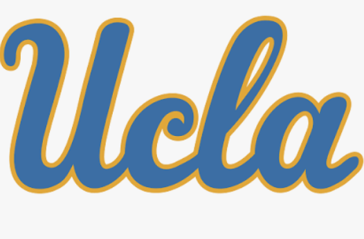
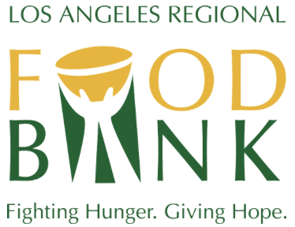
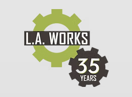
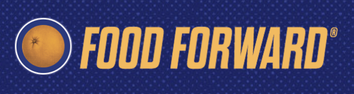
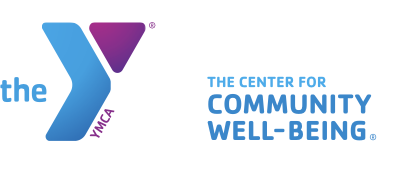
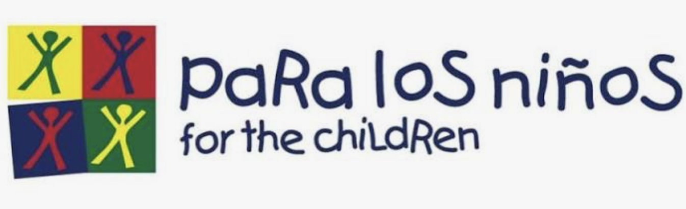

Here is a list of organizations whose main mission is to fight food insecurity in Los Angeles. Share with your friends, teachers, gaurdians, mentors and more!

UCLA Volunteer Center
A volunteer center that partners with non-profit organizations dedicated to fighting food insecurity.
Learn More
Los Angeles Regional Food Bank
A non-profit organization with a mission of fighting hunger in Los Angeles County.
Learn More
L.A. Works
This site provides deep dipes into the systemic issues surrounding hunger in L.A.
Learn More
Food Forward
A non-profit organization dedicated to rescuing surplus produce, preventing waste, and feeding communities.
Learn More
YMCA's FEED LA
A food distribution program that supports local low-income families in need.
Learn More
Para Los Niños
A program that incorporates community support and outreach into its mission.
Learn MoreUse Google Translate To Translate This Page/Utiliza Google Translate Para Traducir Esta Página.